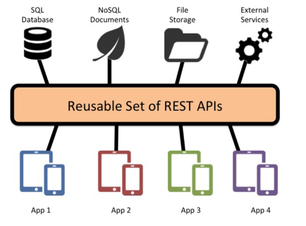
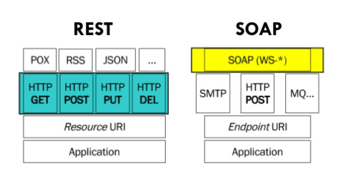

Web Services
DIFERENTELE SI ASEMANARILE DINTRE SOAP, REST SI GRAPHQL
1. Web Services
"A Web service is a software system designed to support interoperable machine-to-machine interaction over a network."
Serviciile Web sunt accesate standardizat via Web. Acestea fac adresarea de resurse cu URI, transferul de date via HTTP
, mesajele adoptand formate de date CSV, JSON, XMl,... . Acestea sunt dezvoltate pe baza platformelor, arhitecturilor,
tehnologiilor și limbajelor curente.
2. SOA - Service oriented architecture
Arhitectura orientata spre servicii este un stil arhitectural de proiectare si dezvoltare de aplicatii considerate drept servicii
care pot fi invocate de alte aplicatii.
Resursele sunt disponibile via o suita de servicii independente ale caror implementari nu trebuie sa fie cunoscute (black box).
Componentele sistemului în ansamblu au un grad mare de independența (de-coupling).
Serviciile trebuie proiectate sa interactioneze fara a exista dependente intre acestea.
Serviciile nu vor depinde de starea comunicarii (statelessness). Pentru a efectua o procesare, cantitatea de informatie
ce trebuie retinută trebuie sa fie minimala.
2.1 SOA - Orchestrare
Existenta unui serviciu principal (service orchestrator) care coordoneaza invocarea altor servicii si preluarea raspunsurilor oferite de acestea
Punctul de vedere este centralizat.
2.2 SOA - Coregrafie
Descrierea globala a serviciilor autonome participante la o activitate, definind maniera de intetrschimb de
mesaje, reguli de interactiune si contracte intre doua sau mai multe puncte-terminale.
Abordarea este descentralizata.
2.3 SOA - Invocare
Necesitate - un protocol de comunicare (transport) de date intre platforme/aplicatii eterogene.
Protocolul va trebui sa ofere un mecanism de invocare si transmitere a datelor in mod structurat,
facilitarea de interactiuni complete intre aplicatii si asigurarea extensibilitatii si a securitatii.
3. SOAP - Simple Object Access Protocol
SOAP este un protocol de comunicatie intre doua masini (client - server) pentru interschimb de date XML.
Avantaj: sofisticat si flexibil.
Acesta este independent de platforma/limbaj de programare. "Dialogul" dintre aplicatii are loc via mesaje SOAP(documente XML).

Poate specifica o cale de la expeditor la destinatar, via un intermediar(proxy) optional (SOAP routing).
Anteturile pot fi procesate de intermediari diferiti.
Datele XML din corp pot fi transportate indiferent de protocolul folosit(desi, uzual, se folosete HTTP, pot fi adoptate si alte
protocale precul SMTP, XMPP).
Prin SOAP poate fi specificat un apel de metoda disponibila pe alt calculator (SOAP RPC reprezentation).
SOAP este echivalentul unui protocol de mesagerie(serializare). Cererea contine un obicet-cerere serializat iar
raspunsul include un obiect-raspuns serializat.
4. REST - Representational State Transfer
REST este un stil arhitectural de dezvoltare a aplicatiilor Web axat asupra reprezentarii datelor. Rezultatul unei
procesari conduce la obtinerea unei reprezentari a unei resurse.
Resursa Web = utilizator, avand cont in cadrul unui sistem, mesaj al unei persoane, fotografie, flux de stiri,
componenta software, set de date ... .
Reprezentarea resursei se face pe baza unui format de date, textual sau binar(exemple tipice-formate deschise:
HTML, JSON, CSV, PNG, SVG, PDF ..).
Formatul reprezentarii e desemnat de tipuri MIME (text/html, text/xml, text/csv, application/json, image/png).
Reprezentarile aceleasi resurse- desemnate de un URI uni- pot fi multiple. Fiecare reprezentare a unei resurse are
asociat un URL.

4.1. REST - Verbe
Clientii( ex navigatoare Web, roboti, playeri, etc) interactioneaza cu reprezentarile resurselor via verbe.
Exemplu : "acceseaza" : GET, "modifica" : POST, "sterge" : DELETE, .. .
Aceste verbe (actiuni) sunt stipulate de un protocol, de obicei HTTP.
4.2. GET
Acceseaza o reprezentare a unei resurse fara sa modifice starea serverului - safe.
Cereri identice vor conduce la oferirea aceluiari raspuns - aceeasi reprezentare (idempotenta).
4.3. HEAD
Similara cu GET, dar furnizeaza doar meta-date(nu ofera reprezentarea propriu-zisa).
De exemplu, informatii privind ultima actualizare sau lungimea continutului/
4.4. PUT si PATCH
Inlocuieste o reprezentare de resursa sau eventual creeaza o resursa la nivel de server Web (al carui URI este deja cunoscut).
Uzual, returneaza URI-ul resursei. Nu este considerata safe, insa este idempotenta.
In schimb, PATCH permite actualizarea partiala a unei reprezentari a unei resurse(PUT nu ofera o asemenea facilitate).
Aceasta metoda nu este safe si nici idempotenta.
4.5. POST
Creeaza o resursa (uzual, subordonata altei resurse). Optional, pot fi realizate si procesari suplimentare. Nu este nici
safe, nici idempotenta.
4.6. DELETE
Sterge o resursa desemnata de un URI. Este idempotenta dar nu este safe.
4.7. OPTIONS
Permite clientului sa determine diverse cerinte privitoare la o resursa (ex: daca o resursa poate fi stearsa) sau
facilitatile expuse de un server (de exemplu, suportul oferit de un proxy). Este si safe si idempotenta.
4.8. Transfer de date
Orice accesare a unei reprezentari plaseaza aplicatia - ori clientul Web - intr-o stare ce va fi schimbata in urma
unui tranfer de date (accesarea altei reprezentari).
Transferul de realizeaza prin protocolul HTTP. Reprezentarea este modelata conform unui format (ex: JSON sau XML) si
indicata prin tipuri MIME (media types).
Adresabilitatea se rezolva via URI.
STATELESS SERVER - Fiecare cerere este considerata independenta, fara a se lua in calcul contextul.
CACHING - Reprezentarile de resurse pot fi stocate temporar.
LAYERED SYSTEM - Aplicatia Web dezvoltata va fi stratificata.
5. Graph Query Language
 "A query language for APIs and a runtime for fulfilling those queries with your existing data".
GraphQL este un limbaj de manipulare a datelor pentru API-uri. Acesta a fost initial folosit la nivel intern de catre
compania Facebook in 2012, urmand ca in 2015 sa fie lansat public. Inspirat de JSON.
Sunt permise interogari - operatii de citire - si actualizari - operatii de alterare a datelor. Ofera suport pentru a
anticipa ce date vor fi introduse + structura acestora.
Relatiile dintre diverse (categorii de) resurse se pot specifica via conexiuni. Raspunsul oferit include doar datele ce au fost
solicitate (rezulta imbunatatirea performantei la nivel de client).
Rezolvarea problemelor vizant over/under fetching (preluarea a mai multor sau prea putine date).
In GraphQL, data este expusa ca un graf, definit printr-o schema(baza de date). Fiecare nod al acestui graf reprezinta
un obiect si contine un rand. Fiecare rand are un nume si un tip. Muchiile apar atunci cand un rand face referire la alt
obiect. Clientii acceseaza serviciul GraphQL print-ul singur endpoint, care este folosit pentru interogari(query).
GraphQL funizeaza un domeniu specific limbajului pentru definirea schemelor, incluzand tipurile si interogarile. De exemplu,
API-ul GraphQL al GitHub-ului are o schema cu tipuri "Repositories" si "Users", pe langa alte entitati.
Exemplu :
POST
"A query language for APIs and a runtime for fulfilling those queries with your existing data".
GraphQL este un limbaj de manipulare a datelor pentru API-uri. Acesta a fost initial folosit la nivel intern de catre
compania Facebook in 2012, urmand ca in 2015 sa fie lansat public. Inspirat de JSON.
Sunt permise interogari - operatii de citire - si actualizari - operatii de alterare a datelor. Ofera suport pentru a
anticipa ce date vor fi introduse + structura acestora.
Relatiile dintre diverse (categorii de) resurse se pot specifica via conexiuni. Raspunsul oferit include doar datele ce au fost
solicitate (rezulta imbunatatirea performantei la nivel de client).
Rezolvarea problemelor vizant over/under fetching (preluarea a mai multor sau prea putine date).
In GraphQL, data este expusa ca un graf, definit printr-o schema(baza de date). Fiecare nod al acestui graf reprezinta
un obiect si contine un rand. Fiecare rand are un nume si un tip. Muchiile apar atunci cand un rand face referire la alt
obiect. Clientii acceseaza serviciul GraphQL print-ul singur endpoint, care este folosit pentru interogari(query).
GraphQL funizeaza un domeniu specific limbajului pentru definirea schemelor, incluzand tipurile si interogarile. De exemplu,
API-ul GraphQL al GitHub-ului are o schema cu tipuri "Repositories" si "Users", pe langa alte entitati.
Exemplu :
POST
RASPUNS
6. SOAP vs REST
In timp ce SOAP si REST sunt similare privind protocolul HTTP, SOAP este un model mai rigid de trimitere a mesajelor
decat REST. Relugile SOAP sunt importante deocarece nu se poate atinge un nivel de standardizare fara ele. REST este in
schimb mai flezibil, deocarece stilul sau arhitectural nu are nevoie de procesare.
Atat SOAP cat si REST se bazeaza pe reguli bine definite.
6.1. Avantaje SOAP
Din punct de vedere al securitatii, in cazul in care se prefera una mai robusta, suportul
SOAP pentru WS-Security poate fi cu adevarat util. Adauga o siguranta suplimentara pentru a pastra datele private si
integrale. De asemenea, vine cu un suport pentru a verifica identitatea prin intermediari.
De asemenea, are o modalitati build-in de a compensa cu comunicatiile esuate. REST, pe de alta paste, nu are un
sistem de mesagerie incorportat. Daca o comuniare esueaza, clientul trebuie sa o gestioneze prin a o recupera.
De asemenea, nu exista un set de reguli pentru REST. Asta inseamna ca ambele aplicatii (atat clientul, cat si serverul),
trebuie sa iti inteleaga contentul si contextul.
SOAP are urmatoarele avantaje, comparativ cu REST:
- Limbaj, platforma si transport independent, in timp ce REST are nevoie de HTTP
- Functioneaza bine in medii enterprise distribuie (REST foloseste comunicare directa point-to-point)
- Standardizat
- Built-in error handler
- Automatizat atunci cand este folosit cu anumite limbaje
- In anumite cazuri, proiectoare unor servicii folosind SOAP poate fi mai putin complexa comparativ cu REST.
Pentru servciile Web care suporta operatii complexe, folosind SOAP necesita un volum mai mic de cod in aplicatie in layer-ul de
tranzatii, securitate, incredere si alte elemente.
- SOAP este foarte extensibil catre alte protocoale si tehnologii. In adaugirea lui WS-Security, SOAP are
suport si pentru WS-Adressing, WS-Coordination, WS-ReliableMessaging si asa mai departe.
6.2. Avantaje REST
REST are urmatoarele avantaje, comparativ cu SOAP:
- In mare parte mai usor de folosit si mai flexibil
- Nu necesita tool-uri scumpe pentru a interactina cu serviciile web.
- Usor de invatat
- Eficient(SOAP foloseste XML pentru toate mesajele, REST poate folosi formate mai mici)
- Rapid
- Cuplat cu JSON(care de obicei functioneaza mai bine cu datele si ofera o parsare mai rapida
a acestora), REST este in general considerat mai usor de lucrat
- Multumita JSON, REST ofera un suport mai bun pentru clientii browser-ului
- REST ofera o performanta superioara, in particular prin caching pentru informatia care nu este
alterata si nu este nici dinamica.
- Este folosit petru servicii majore precum Google, Yahoo, Ebay, Amazon etc.

6.3. REST vs SOAP pentru aplicatii mobileS
Pentru a testa performanta celor doua protocoale in cadrul aplicatiilor mobile, s-a creat o aplicatie care foloseste
o schema HR pentru a returna o lista de departamente, inclunzand o lista de angajati pentru fiecare departament. Deci
in total s-au considerat 27 de departamente cu 107 angajati. Fiecare departanent are 4 atribute, fiecare angajat are 11
atribute. In format JSON, aceste date ocupa 26.2 KB in timp ce in format XML ocupa 77.3 KB.

6.4. Concluzii
In primul rand, raspunsul la intrebarea "REST sau SOAP" are ca raspuns : "DEPINDE". Fiecare protocol are definite niste
avantaje si dezavantaje. Alegerea dintre REST si SOAP depinde de limbajul de programare folosit, environment,
si de requirements.
7. SOAP vs GraphQL
Se poate spune despre GraphQL ca are puterea cat a SOAP si REST combinate. GraphQL si SOAP folosesc amandoua doar
un singur endpoint pentru a accesa datele. Ambele formate sunt strongly typed : trebuie sa declaram tipurile de date
(Intefer, String, Date, etc.) atunci cand le folosim. Ambele duc lipsa de build-in caching, avand nevoie sa foloseasca
alte tool-uri pentru a le augumenta.
8. REST vs GraphQL
Cu un REST API, datele vor fi preluate folosind mai multe endpoint-uri. In schimb, in momentul folosirii
GraphQL, se trimite pur si simplu o interogare catre server care include cerintele concrete ale datelor. Serverul
apoi raspunde cu un obiect JSON unde aceste cerite sunt indeplnite.
8.1. Dezavantaje REST-Aparitia GraphQL
In timp ce REST ofera multe avanataje developerilor si a devenit standardul companiilor care face deploy de API,
are si dezavantaje. Acestea apar din pricina faptului ca serverul creeaza reprezentarea unei resurse dar si raspunsul
clientului care il foloseste.
API-urile RESTful intorceau de multe ori mai multe date decat cerea sau avea nevoie clientul. Alternativ, clientul
trebuia sa faca mai multe API call-uri pentru a primi datele de care are nevoie. Developerii trebuiau de asemenea sa
creeze endpoint-ruile API avand in minte modelul front-end view-ului, iar orice schimbare in fron-end views trebuiau schimbate
si in endpoint-urile API.
Astfel, s-a ajuns la o flexibilitate redusa.
Astfel, s-a cautat o alternativa a REST-ului. Facebook a venit cu aceasta solutie in 2012, facund-o publica in 2015.
8.2 Similaritati si diferente
Conceptul REST consta in resursa care este identificata ca si URL. Atunci cand un developer vrea sa recupereze
o resursa in aplicatia lor, ei trimit un HTTP GET request. Din moment de API-urile folosesc JSON, raspunsul va fi
in format JSON.
Pana in acest punct, GraphQL si REST sunt similare.
Privind in schimb diferentele, atunci cand developerii folosesc REST API-uri in aplicatia lor, ei apeleaza la endpoint-uri.
Totusi, diferenta cu GraphQL este ca resursa este preluata. Developerii de GraphQL definesc "tipuri" pentru informatiile
pe care vor sa le preia, astfel, creeaza interogari in baza de date specificand ce informatii for sa primeasca.
Atunci cand o aplicatie face un REST API call, executia foloseste route handlers, care sunt functii pentru URL-urile
specifice. Functioneaza astfel:
- Server-ul primeste request-ul si recupereaza path-ul URL si verbul HTTP (ex. GET)
- Server-ul gaseste verbul care se potriveste si path-ul
- Server-ul executa functia si produce un rezultat
- Rezultatul este serializat si se trimite un cod de raspuns si un header catre client
GraphQL foloseste acelasi model in practica, dar totusi, implementarea este diferita.
- In timpul unui apel GraphQL API, server-ul primeste un request si recupereaza interogarea.
- Examineaza interogarea, apoi apeleaza resolver-ul pentru fiecare rand din query.
- Resolver-ul returneaza un rezultat, ca mai apoi sa fie trimis clientului.
8.3. Avantaje GraphQL
GraphQL foloseste Schema Definition Language (SDL). Schema include toate tipurile folosite in API si defineste modul
in care un client ar trebui sa acceseze datele din server.
Dupa ce echipa de development defineste o baza de date(schema), atat front-end developerii cat si back-end developerii
stiu structura datelor. Aceste echipe pot lucra acum in paralel. Echipa de front-end poate crea daye de test dummy pentru
a testa aplicatia lor, astfel incat atunci cand aceasta este finalizata, sa poate fi folosita folosind un API real. Acest lucru
ajuta la imbunatatirea productivitatii echipelor.
Aplicatiile care folosesc REST API-uri primesc intregul set de date intr-un API endpoint, dupa cum am mai explicat.
Creatorul aplicatiei nu isi poate forma o viziune privind volumul de folorire a unor anumite date, intr-un cat acestea sunt
mereu returnate integral.
Pe de alta parte, cum GraphQL foloseste interogari si developerii le folosesc pentru a primi anumite date specifice. Acest
lucru permite creatorului aplicatiei sa isi formeze o viziuna asupra datelor, care sunt mai cerute, dar mai ales, va stii
care date nu sunt cerute sau folosite de catre clienti.
8.4. Concluzii
Atat REST cat si GraphQL sunt modele proeminente de a dirija modul in care un API va functiona si in care o
aplicatie isi va accesa datele din acesta. In timp ce REST are o munca signifiant mai simplificata pentru developeri
prin abordarea sa standardizata, are si dezavantaje. GraphQL, cu interogarile sale, bazele de date si resolver-urile
ofera mai multa flexibilitate, si chiar mai mult, o mai buna performanta.
Totusi, amandoua pot fi implementate intr-un proiect.
9. SOAP, REST & GraphQL
In concluzie, stim ca fiecare protocol a aparut ca si consecinta a celuilalt. Incepand de la SOAP, avand nevoie
de un protocol mai flexibil care sa ofere mai multe formate pentru comunicare decat cel de tip XML, a aparut REST
care este si cel mai folosit in zilele noastra. De asemenea, pentru o performata mai buna si o eficienta mai sporita,
a fost inventat GraphQL-ul.
SOAP este cel mai securizat, avand actiuni arbitrare, stucturi de date oricat de complexe(inclusiv de validare),
o descriere complexa a serviciului (pe baza WSDL), devoltare sofisticata si de asemenea, fiind specific mediului
enterprise.
REST consta in actiuni fixe (GET, POST,..), opereaza asupra reprezentarilor de resurse, scalabil, uzual si cu o abordare
pragmatica in aplicatiile sociale, fiind bazat pe URI si hipermedia.
GraphQL este usor de utilizat si practic, folosindu-se de scheme de baze de date pentru a relationa cu serverul prin
intermediul interogarilor.
10. Resurse
- https://profs.info.uaic.ro/~busaco/teach/courses/web/presentations/web10ServiciiWeb-SOA-SOAP-WSDL-UDDI.pdf
- https://profs.info.uaic.ro/~busaco/teach/courses/web/presentations/web11ServiciiWeb-REST.pdf
- https://profs.info.uaic.ro/~busaco/teach/courses/web/presentations/web12ServiciiWeb-API-Microservicii-Serverless.pdf
- https://en.wikipedia.org/wiki/SOAP
- https://www.ateam-oracle.com/performance-study-rest-vs-soap-for-mobile-applications
- https://arxiv.org/pdf/2003.04761.pdf
- https://www.howtographql.com/basics/1-graphql-is-the-better-rest/
- https://medium.com/better-practices/rest-soap-graphql-gesundheit-6544053f65cf
- https://stackify.com/soap-vs-rest/
- https://en.wikipedia.org/wiki/GraphQL